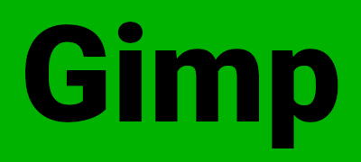
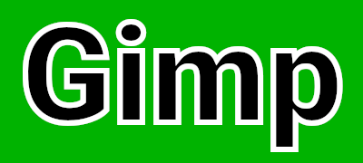
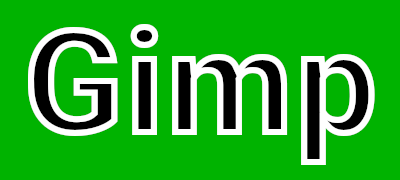

This script creates an outline around the contents of a layer.
The script is started with the entry menu Layer>Outline layer contents
The outline color is the current background color.
If the layer is a text layer, the outline uses the same anti-aliasing setting as the text layer.
The outline is merged in the target layer. The resulting layer is the size of the target layer, enlarged with enough margin to hold the outline. If the target layer is a text layer, it will disappear as a text layer, so make a copy first if you want to keep it.
Line width: the outline width in pixels. Decimal pixels are supported.Position: the position of the outline relative to the edge of the layer contents. Starting with

Over the border: the outline straddles the border:

Outside the border: the outline starts from the border and extends outwards:
Inside the border: the outline starts from the border and extends inwardss:

Join style: the style of the "joins" which is how the outline behave around sharp points in the shape.
Miter limit: how "pointy" things cant get with "Miter" joins.Join style and Miter limit are the same values as in the Edit>Stroke path function.